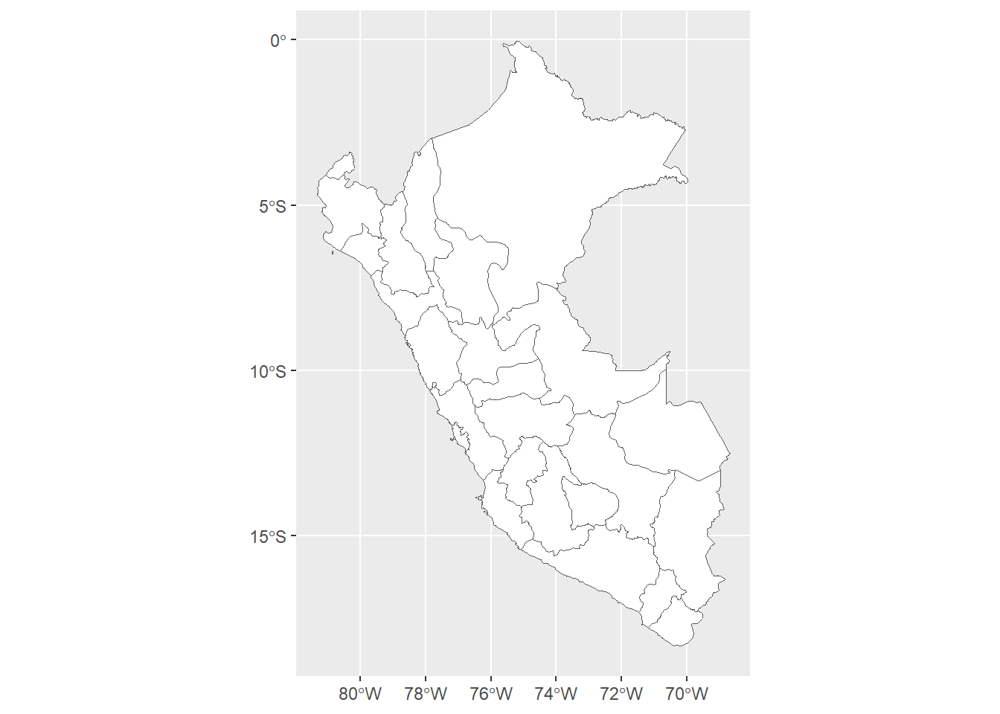
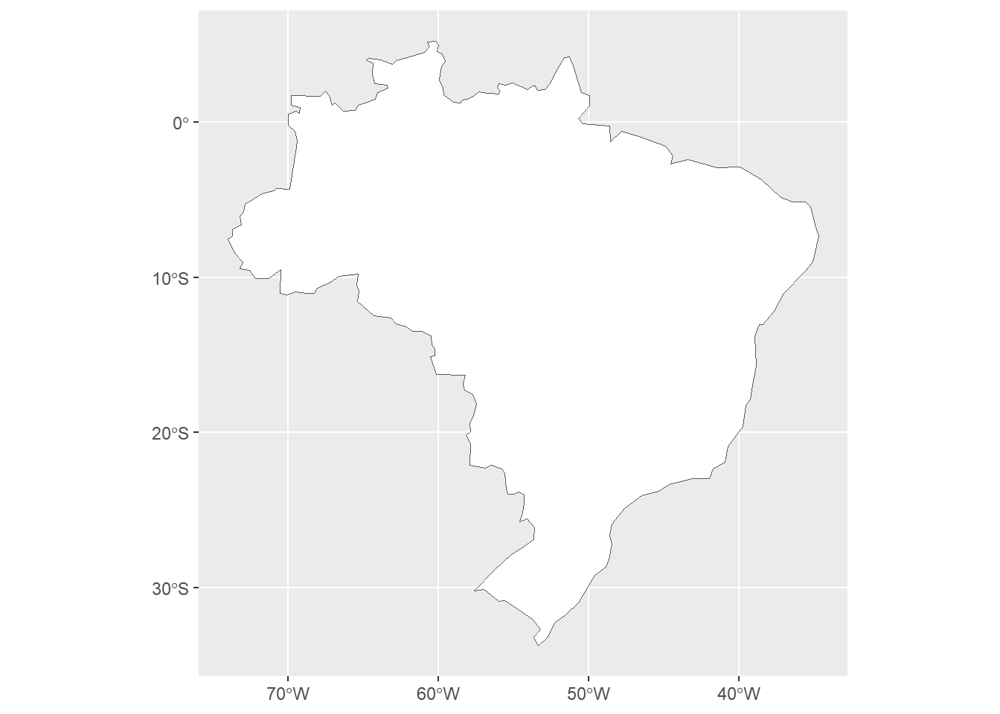
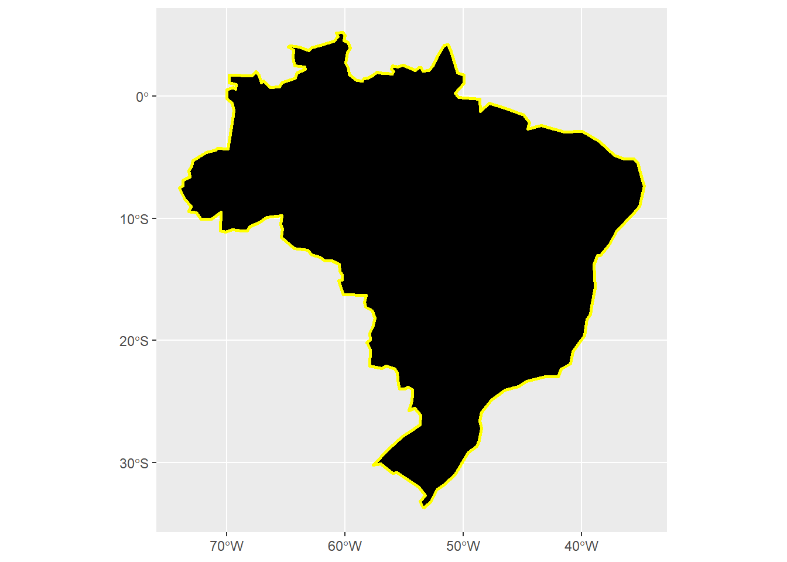
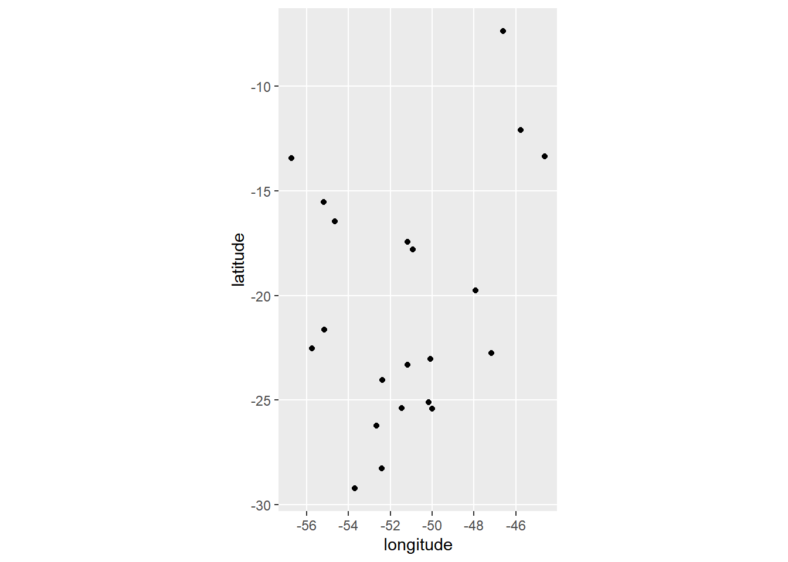
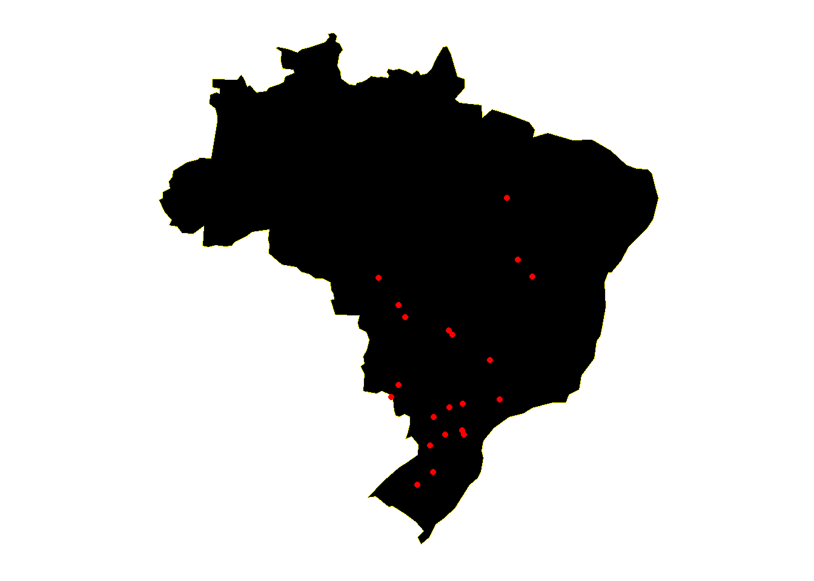
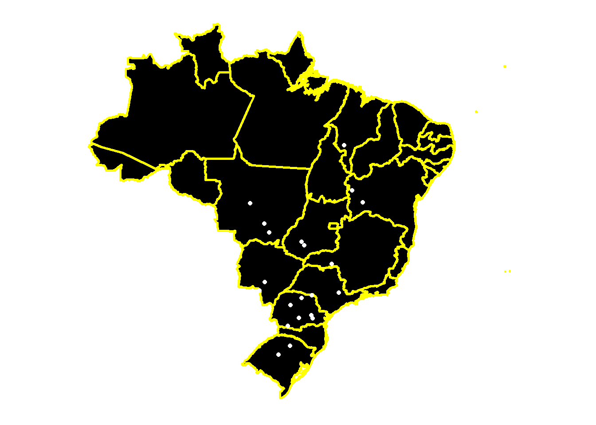
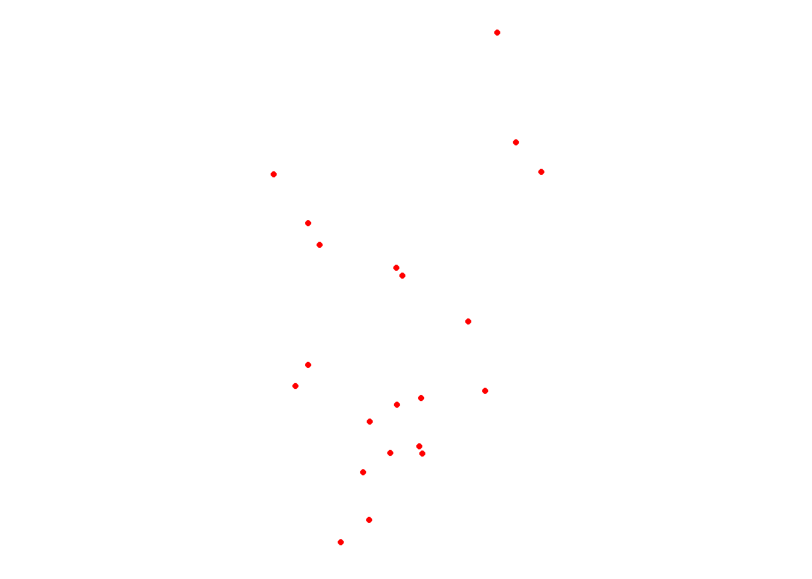
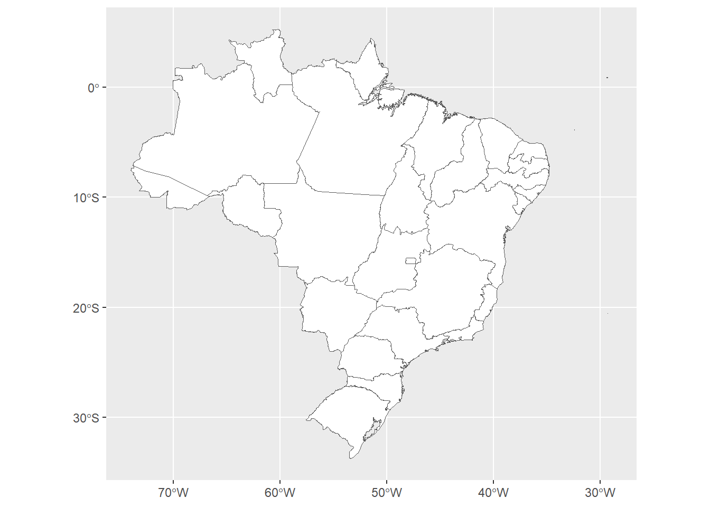
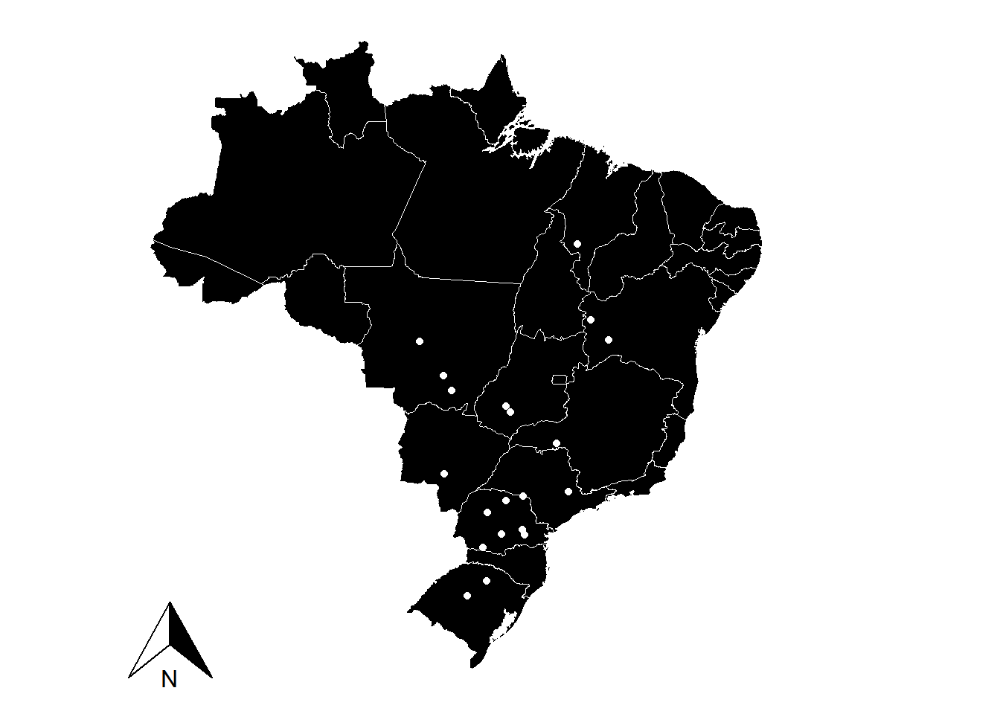
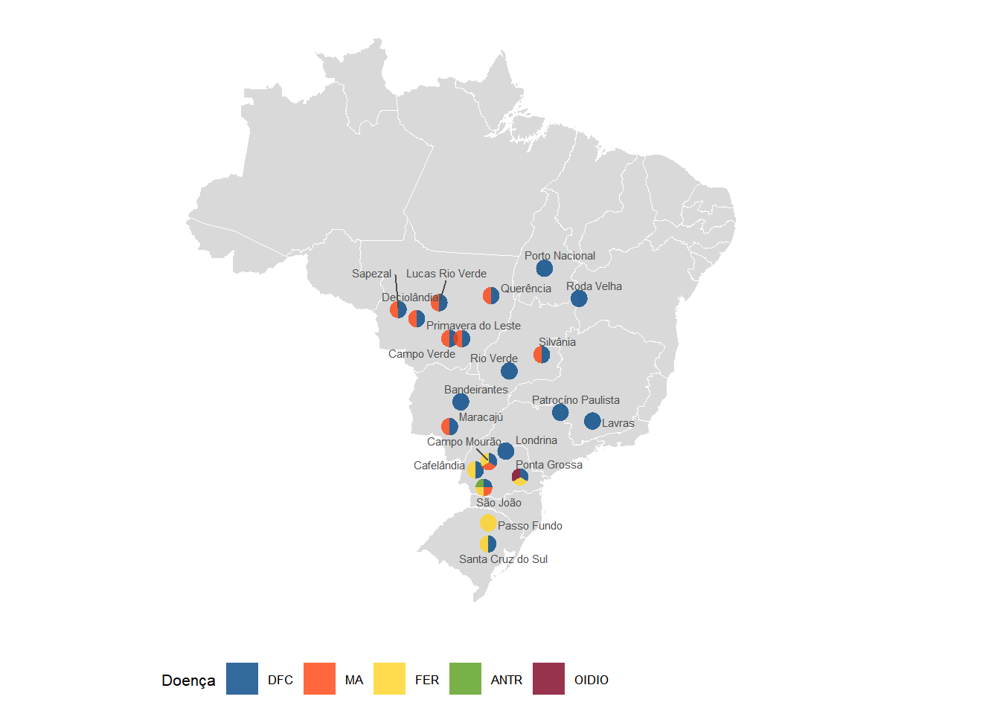

library(rnaturalearth)
library(rnaturalearthhires)
library(tidyverse)Aula11
Criação de mapas
Utiliza-se os pacotes rnaturalearth, rnaturalearthhires
world <- ne_countries()
BRA <- ne_states(country = "Peru",
returnclass = "sf")
world <- ne_countries()
ggplot(BRA) +
geom_sf(fill = "white")
BRA <- ne_states(country = "Colombia",
returnclass = "sf")
BRA <- ne_states(country = "Brazil",
returnclas = "sf")
BRA <- ne_countries(country = "Brazil",
returnclas = "sf")word <- ne_countries()
ggplot(BRA) +
geom_sf(fill = "white")
world <- ne_countries()
ggplot(BRA) +
geom_sf(fill = "white")
ggplot(BRA) +
geom_sf(fill = "black",
color = "yellow",
linewidth =1)
MG <- BRA %>%
filter(name_en == "Minas Gerais")library(r4pde)
sbr <- RustSoybean
sbr |>
ggplot(aes(longitude, latitude)) +
geom_point() +
coord_sf()
library(ggthemes)
ggplot(BRA) +
geom_sf(fill = "black",
color = "yellow",
linewidth = 0.1)+
geom_sf(data = MG, fill = "white")+
geom_point(data = sbr, aes(longitude, latitude),
color= "red")+
theme_map()
BRA <- ne_states(country = "Brazil",
returnclass = "sf")
world <- ne_countries()
ggplot(BRA) +
geom_sf(fill = "white")
ggplot(BRA) +
geom_sf(fill = "black",
color = "yellow",
linewidth =1) +
geom_point(data = sbr, aes(longitude, latitude),
color = "white") +
theme_map()
ggplot(BRA) +
geom_sf(data = MG, fill = "white") +
geom_point(data = sbr, aes(longitude, latitude),
color = "red") +
theme_map()
library(ggspatial)
ggplot(BRA) +
geom_sf(fill = "white")
ggplot(BRA) +
geom_sf(fill = "black",
color = "white",
linewidth = 0.3) +
# geom_sf(data = MG, fill = "white") +
geom_point(data = sbr, aes(longitude, latitude),
color = "white") +
theme_map() +
annotation_north_arrow(which_north = "grid")
bra <-ggplot(BRA) +
geom_sf(fill = "black",
color = "white",
linewidth = 1) +
geom_sf(data = MG, fill = "black") +
geom_point(data = sbr, aes(longitude, latitude),
color = "white") +
theme_map() +
annotation_north_arrow(which_north = "grid")library(leaflet)
leaflet() |>
addTiles() |>
setView(lng = -42.8825 , lat = -20.7546, zoom = 15)library(leaflet)
leaflet() |>
addProviderTiles(providers$Esri.NatGeoWorldMap) |>
setView(lng = -42.8825 , lat = -20.7546, zoom = 5)library(leaflet)
leaflet(sbr) |>
addTiles() |>
setView(lng = -42.8825 , lat = -20.7546, zoom = 5) |>
addMarkers()library(scatterpie)
mapa <- gsheet::gsheet2tbl("https://docs.google.com/spreadsheets/d/1pAIFKsdKxk_UQQXdYwIO-O5NOkYNhpclImJcLziYnk4/edit?gid=50258992#gid=50258992")
library(ggrepel)
Bra_2 <- ggplot(BRA) +
geom_sf(fill = "white", color = "black", linewidth = 0.5) +
coord_sf()+
geom_point(data = mapa, aes(lon, lat))+
geom_scatterpie(aes(x=lon, y=lat, r = 0.6),
alpha = 0.8, color = NA, data = mapa,
cols = c ("DFC",
"MA",
"FER",
"ANTR",
"OIDIO"))+
geom_text_repel(data = mapa, aes(lon, lat, label = Local),
size = 2, nudge_x = 0.2, nudge_y = 0.27, color = 'gray30', family = "Arial")+
ggthemes::scale_fill_calc()+
ggthemes::theme_map()+
labs(x = "Longitude", y = "Laititude", legend = "", fill = "Doença")+
theme(legend.position = "bottom", text = element_text(family = "Arieal", size = 8))
ggplot(BRA) +
geom_sf(fill = "gray70", alpha = 0.5, color = "white") +
coord_sf()+
geom_scatterpie(aes(x = lon, y = lat, r = 0.6), alpha = 0.8, color = NA, data = mapa,
cols = c("DFC",
"MA",
"FER",
"ANTR",
"OIDIO"))+
geom_text_repel(data = mapa, aes(lon, lat, label = Local),
size = 2, nudge_x = 0.2, nudge_y = 0.27, color = "gray30", family = "Arial") +
ggthemes::scale_fill_calc()+
ggthemes::theme_map() +
labs(x = "Longitude", y = "Latitude", legend = "", fill = "Doença")+
theme(legend.position = "bottom", text = element_text(family = "Arial", size = 8))